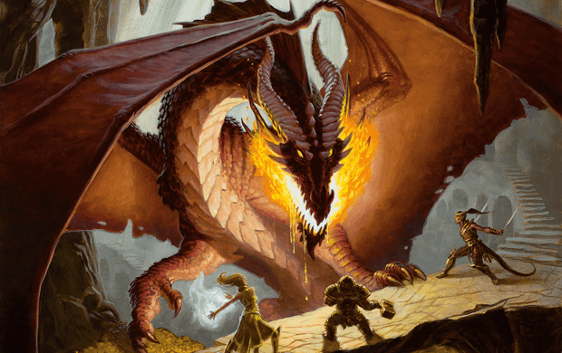

Donjon et Dragons
Donjon et Dragons (abrégé D&D) est l'un des tout premiers JDR, et le plus connus aujourd'hui Ce JDR se passe dans un univers fantastique, comprenant des peuples et des animaux fabuleux (Elfes, Orques, Nains, Dragons, etc), se déroulant dans une époque médiévale. On y retrouve de la magie, des dieux qui intéragissent avec le monde, et des démons.
